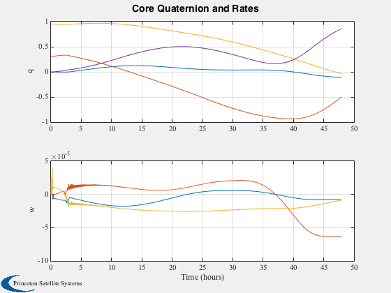
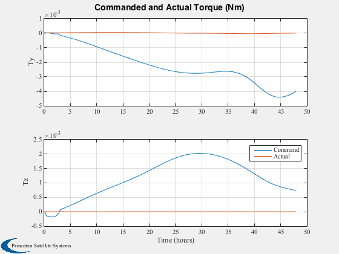
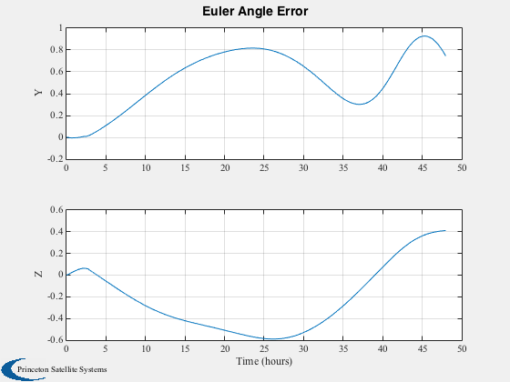
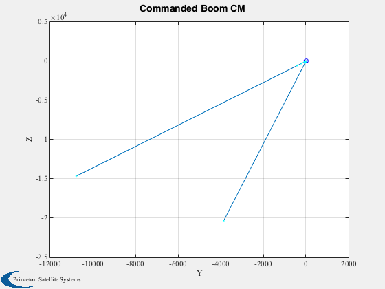
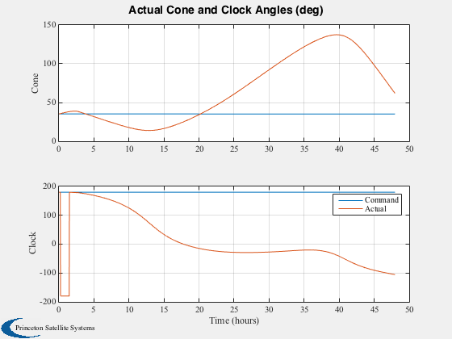
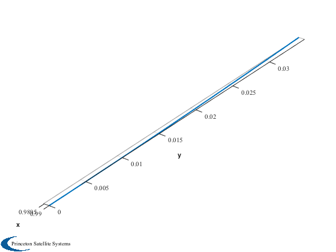
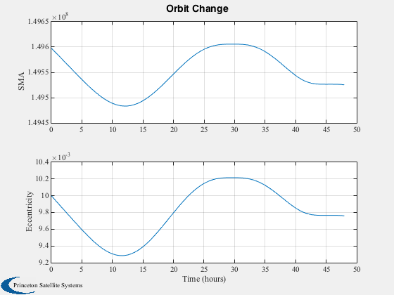

Combined guidance and control demo with fixed rate two-body dynamics.
This script uses FMovingBody which distributes rates to the core body when
the boom is moved to conserve momentum.
This demo uses the PlateWithBoom CAD model. The control law is
designed using PIDMIMO. There is no roll actuation and therefore the
attitude trajectory must use only Y and Z torques.
The attitude dynamics assume fixed gimbal rates.
The CAD model is a perfectly specular plate with a control boom.
The time step is 600 sec for the outer ACS loop and 120 sec for the inner
loop which moves the boom.
Functions demonstrated:
PIDMIMO
QToConeClock
FMovingBody
SailDisturbance
PlateWithBoom
Since version 7.
------------------------------------------------------------------------
See also AC, CrossSection, PIDMIMO, Q2AU, QForm, QTForm, QZero, U2Q,
Constant, WaitBarManager, Plot2D, Plot3D, TimeLabl, Cross, Mag, RK4, Unit,
JD2000, RV2AE, El2RV, Accel, FMovingBody, ClockConversion, ConeClockToU,
QToConeClock, FHingeOrbit, ProfileStruct, SailDisturbance,
SailEnvironment, delta, LocallyOptimalTraj
------------------------------------------------------------------------
Contents
aRateNom = 0.3;
wn = 0.0001;
days = 2;
clear SailDisturbance
Load the control boom sail model
g = load('PlateWithBoom.mat');
Sim timing
dTg = 2*3600;
dTo = 600;
dTi = dTo/5;
tDuration = days*86400;
nSim = floor(tDuration/dTi);
Control parameters - use PIDMIMO to design attitude control loop
xN = zeros(6,1);
iner = diag([1 1 1]);
zeta = 2;
omegaR = 5*wn;
tauInt = 10000;
sType = 'z';
[aC, bC, cC, dC] = PIDMIMO( iner, zeta*ones(1,3), wn*ones(1,3), tauInt*ones(1,3), ...
omegaR*ones(1,3), dTo, sType );
Sail physical parameters
aSail = CrossSection(g);
fSail = 1367/3e8*2*aSail*[-1;0;0];
aBoom(:,1) = Cross([0;1;0],fSail);
aBoom(:,2) = Cross([0;0;1],fSail);
Aboom = pinv(aBoom);
mC = g.body(1).mass.mass;
mB = g.body(2).mass.mass;
rBoomCM = Mag(g.body(2).mass.cM);
Create the disturbance profile
Initial Julian date
p = ProfileStruct;
p.jD = JD2000;
p.body = 2;
We are creating a circular heliocentric orbit.
au = Constant('au');
mu = Constant('mu sun');
el = [au 0 0 0 0.01 0];
Orbit state
[r0,v0] = El2RV(el,[],mu);
Initial Quaternion (inertial to body frame)
[alpha, delta] = LocallyOptimalTraj( 'semi-major axis', r0, v0, mu, -1 );
s = -Unit(r0);
clock = ClockConversion( alpha, delta, 1, 2, ...
struct('r',r0,'v',v0,'s',s,'eciFlag',0) );
clock = pi;
[u,qItoCC] = ConeClockToU( alpha, clock, r0, v0, s );
q0 = qItoCC;
kN =
1
Create the data structure
d = [];
d.aeroOn = 0;
d.albedoOn = 0;
d.solarOn = 1.0;
d.magOn = 0;
d.radOn = 0;
d.ggOn = 1.0;
d.g = g;
d.mu = mu;
Orbiting the sun.
d.planet = 'sun';
Initial state
t = 0;
tO = dTo;
tG = dTg;
w = [0;0;0];
x = [r0;v0;q0;w;zeros(6,1);QZero;zeros(3,1)];
boomCM = [0;0];
tPlot = zeros(1,nSim);
xPlot = zeros(length(x),nSim);
hPlot = zeros(3,nSim);
tqPlot = zeros(6,nSim);
aEPlot = zeros(2,nSim);
cMPlot = zeros(2,nSim);
cCPlot = zeros(2,nSim);
xOPlot = zeros(6,nSim);
fPlot = zeros(3,nSim);
cAPlot = zeros(2,nSim);
Simulation loop
WaitBarManager( 'initialize', struct('nSamp',nSim,'name','Boom Control Demo') );
tic
for k = 1:nSim
r = x(1:3);
v = x(4:6);
rHat = Unit(r);
qCore = x(7:10);
qBoom = x(20:23);
p.r = r;
p.v = v;
p.q = qCore;
[angle,u] = Q2AU( qBoom );
p.angle = angle;
p.axis = u;
if (tG >= dTg)
[alpha, delta] = LocallyOptimalTraj( 'semi-major axis', r, v, mu, -1 );
coneC = alpha;
clockC = pi;
tG = 0;
end
[coneA,clockA] = QToConeClock(qCore,r,v,-rHat);
uSailI = ConeClockToU( coneC, clockC, r, v, -rHat );
uSailB = QForm( qCore, uSailI );
errY = uSailB(3);
errZ = -uSailB(2);
eulErr = [0;errY;errZ];
if (tO >= dTo)
e = SailEnvironment( 'sun', p, d );
angleError = [0;eulErr(2:3)];
accel = cC*xN + dC*angleError;
xN = aC*xN + bC*angleError;
tExt = -g.mass.inertia*accel;
boomCM = -Aboom/cos(coneA)^2*tExt/(mB/(mC+mB));
mBoomCM = Mag(boomCM);
if (mBoomCM >= rBoomCM)
hB = 0;
else
hB = sqrt(rBoomCM^2 - mBoomCM^2);
end
uB = Unit([hB;boomCM]);
tO = 0;
end
qBoomError = U2Q( QTForm(qBoom,[1;0;0]), uB );
[angleE,uV] = Q2AU( qBoomError );
aDot = min( abs(angleE)/dTi, aRateNom );
Omega = -sign(angleE)*aDot*uV;
[f,tq] = SailDisturbance( g, p, e, d );
tqPlot(4:6,k) = tq.total;
tPlot(k) = t;
xPlot(:,k) = x;
aEPlot(1:2,k) = eulErr(2:3);
tqPlot(1:3,k) = tExt;
cMPlot(:,k) = boomCM;
fPlot(:,k) = f.total;
cAPlot(:,k) = [coneA;clockA];
cCPlot(:,k) = [coneC;clockC];
xRates = x;
xRates(24:26) = Omega;
xNew = FMovingBody( 'init', x, xRates, tq, d );
x = RK4( @FHingeOrbit, xNew, dTi, t, f, tq, d );
t = t + dTi;
tO = tO + dTi;
tG = tG + dTi;
p.jD = p.jD + dTi/86400;
WaitBarManager( 'update', k ); drawnow;
end
WaitBarManager( 'close' );
toc
Elapsed time is 14.957587 seconds.
Prepare data for plotting
[tPlot2, tLabl] = TimeLabl( tPlot );
Create Plots
h = [];
h(1) = Plot2D(tPlot2,xPlot(7:13,:),tLabl,{'q','w'},'Core Quaternion and Rates',...
'lin',{[1 2 3 4],[5 6 7]});
h(2) = Plot2D(tPlot2,tqPlot,tLabl,{'Ty','Tz'},'Commanded and Actual Torque (Nm)',...
[],{[2 5],[3 6]});
legend('Command','Actual')
Plot2D(tPlot2,aEPlot,tLabl,{'Y','Z'},'Euler Angle Error');
Plot2D(cMPlot(1,:),cMPlot(2,:),'Y','Z','Commanded Boom CM');
hold on
plot(cMPlot(1,1),cMPlot(2,1),'bo');
plot(cMPlot(1,end),cMPlot(2,end),'bx');
plot(cMPlot(1,:),cMPlot(2,:),'c.');
Plot2D(tPlot2,[cCPlot;cAPlot]*180/pi, tLabl, {'Cone','Clock'}, 'Actual Cone and Clock Angles (deg)',...
'lin',{[1 3],[2 4]})
legend('Command','Actual')
Plot3D(xPlot(1:3,:)/au);
[sma, ecc] = RV2AE( xPlot(1:3,:), xPlot(4:6,:), mu );
Plot2D(tPlot2,[sma;ecc],tLabl,{'SMA','Eccentricity'},'Orbit Change')
      